{kind=link}
{kind=link}
{kind=link}
{kind=link}
{kind=link}
{kind=link}
{kind=link}
{kind=link}
{kind=link}

Fonderie Miniatures 1/48 Dornier Do.24T
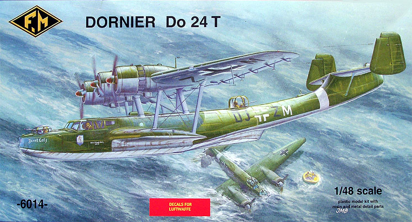
Kit #6014
MSRP $102.95
Images and text Copyright � 2006 by Matt Swan
Developmental Background
In 1934 the Dutch Navy started an investigation into a successor for the aging Dornier Wal flying boats to patrol the vastness of the Dutch Indies. Dutch Navy officer 2nd class C. Sanders drew up the requirements of the successor of the Wal. The new plane had to be bigger, equipped with three engines, none of these to use pusher propellers, a maximum speed of 315 km/h, be of an all-metal construction and comfortable enough for long distances. The Wal had established Dornier as a financial success in the aviation industry and the Do-18 had confirmed the developmental ability of the basic design. Looking at the aircraft the similarity in wing, hull and sponson design is obvious.
Dornier was able to make an offer and on August 6th 1936 the first contract was signed for the delivery of 6 flying boats to the Dutch Navy, designated Do-24. The German rebuild was in full swing and the RLM was not willing to make any production capacity available for the Dutch Do-24's. As a result of this economic and political situation the first order was placed via Dornier�s post World War One facility, Swiss Aero-Metall A.G. in Zurich. Powered by three 600hp Junkers Jumo 205C diesel engines, four prototypes were built, two for the Dutch and two for the RLM and so began a series of aircraft that would remain operational in some manner into the twenty-first century.
Do-24s were the most successful flying boats in Germany during the Second World War and were operated as long-range reconnaissance, transport and rescue aircraft in the Mediterranean, Dutch East Indies and Scandinavia. The aircraft featured a wide shallow fuselage with the engines mounted on a broad chord wing mounted above the fuselage with side sponsons at the water line. By 1940 11 aircraft had been completed and 26 more were under construction. After Germany invaded the Netherlands production continued for the Luftwaffe as well as being put into production with the Potez-CAMS factory at Sartrouville in 1941. The Luftwaffe received 170 airframes from Holland and a further 48 from France. After the war an additional 20 aircraft were built and the type remained in service until 1955 when most remaining aircraft were sold to Spain. In 2003 Seair of the Philippines purchased a Do-24TT from Spain, reconditioned the aircraft and operates it on tourist routes between the islands. During the 1980s The Dornier Company manufactured the Do-24ATT, which is a turbo prop version of the same aircraft, and that unit still operates to this day.
The Kit
This kit arrives in a fairly large box that right away gives the modeler a clue as to the size of this aircraft. The box itself is a fairly heavy duty corrugated cardboard base with a lighter gauge box top. Artwork is attractive if somewhat faded looking. Inside we have a couple of very light gauge plastic bags containing the plastic parts along with two small sealed bags with the resin and the white metal detail pieces.
This is a limited run kit and as such we see low pressure injection molded pieces. The plastic is light gray and very soft in texture. Sprue gates are somewhat large and care must be taken when removing the parts from the sprues to avoid tearing the plastic. All the parts sprues show heavy amounts of flash. All the side windows in the fuselage halves are also flashed over. Inside the fuselage we have some heavy injector pin markings but these are focused around the window areas and once those are cleared the injector pins go with away. Most of the plastic pieces have good surface texture but some areas do display some slight roughness that can be easily sanded down. Panel lines are finely engraved and for the most part, match up along major seam lines. A few on the lower aft section of the fuselage will need correcting.
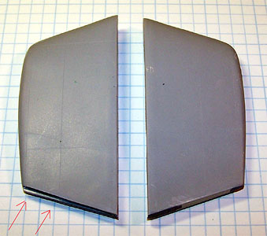
My example of the kit does not show any sink marks or short shot injection but I have heard reports from others in possession of this kit that have had that problem. The fuselage halves seem to match up fairly well as do the main wing components. The central section of the wing takes some stressing to get a good fit. The sponsons have some fit issues, at least one side does as can be seen in the image to the right. I found similar misalignments with both outboard wing panels.
The wing is actually a six piece assembly; central and two outboard sections. It appears that the model would build up in two basic subassemblies; the wing and the fuselage. On the wing side of things we have three resin engines but sadly the molds are degrading very rapidly for these parts. In my example the first engine was nearly perfect while the second and third have quite a few casting boogers within them. One note on these engines is that they each have a metal pin cast into them as the crank shaft. Also for the wing/engine area are resin carburetor intakes and oil coolers. The modeler may want to add some scratch build control actuators on the flight control surfaces. Inside the fuselage we have a nicely detailed front office with resin dash featuring nice instrument bezels and panel definition. No instrument face detail exists and the addition of aftermarket instrument face decals would be a plus. An engineer�s panel is included and crew seats come in the white metal package of parts. All internal bulkheads are cast with doors closed but should the modeler care to detail the passenger compartment these could be opened as well as the fuselage hatches with just a little work.
Taking an inventory of the parts included we have one hundred twelve low pressure injection molded gray plastic pieces, eight injection molded clear port windows along with nine clear vacuformed pieces. These show good clarity and well defined frame lines. The kit provides a duplicate set of canopies in the event you should screw one up or want to start opening some cockpit windows. Next we have nineteen resin pieces that all show nice detail, minimal flash and no evident micro bubbles. Lastly we have thirty nine white metal parts that include things like mass balancers for the control surfaces, heavy primary wing supports and various interior details. This results in a total parts count of one hundred eighty seven pieces.
Seems there is supposed to be a photo etched fret with this kit but mine is missing. This has been addressed with the distributor and we�ll add an image and adjust the parts count once it arrives. This just indicates that you should always inspect your new arrivals carefully before they head to the stash; things like this are easy to deal with when the kits are still on shop shelves.
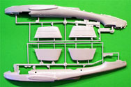
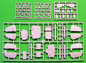
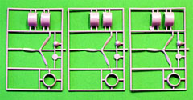
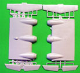
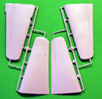
You may click on these small images to view larger pictures
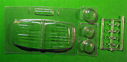
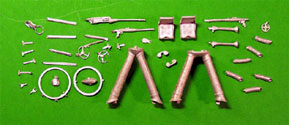
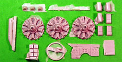
Simply telling you that this is a large model doesn�t really get the point across so I selected another kit as a size reference that most modelers should be able to relate to and it�s in the same general category as the Do-24, the PBY Catalina. Taping the fuselage halves together of both models they both have about the same body width but the Dornier is much longer. The Dornier wing has greater width and cord where the PBY wing is a bit longer and narrower. You can click on these images below to view larger pictures.
Decals and Instructions
The kit instructions will require careful study before construction begins. The instructions consist of five A4 sized sheets folded in half like a booklet but they cannot be used in this format. They must be unfolded and each viewed as a separate sheet. Only a few of the construction steps are provided as exploded views with all the rest being done in very short narratives. The narratives are provided in both English and French. No color charts are provided for the interior assemblies and exterior colors are shown by RLM number and name only, no actual paint codes are provided. Two of the five sheets cover exterior painting and decal placement. You can take a look at complete scans of the kit instructions here.
The kit includes three sheets of decals, a medium sized main sheet and two very small secondary sets. The main sheet provides the primary markings for two German aircraft with politically correct swastikas broken down into pieces. The first secondary sheet is simply a correction sheet for one of the two aforementioned aircraft and the other contains a few unit badge markings. You can click on the image to the right to view a larger scan of the decals. The decals appear to be well done with good color density and print registry. Until I can test some of these with setting solutions care should be taken in that department. Unfortunately the decal sheets do not include any service stencils or warning markings.
Conclusions
I have been waiting for many years for any model company to produce a 1/48 scale kit of this aircraft and while this one does have some issues it is definitely buildable and I have to applaud FMs effort. Actually Fonderie Miniatures has been making some pretty impressive moves over the last few years taking chances with several new large injection molded kits that other main stream manufactures seem afraid to touch.
It is a limited run kit and as such will experience several issues common to this kind of model like soft plastic and high flash. The overall workmanship is good and while there are a few minor parts fit issues this should be within the capabilities of most accomplished modelers. Since this is a new kit the aftermarket has yet to release anything specifically aimed at the kit however Vector has some really nice BMW 132 engines that could be used here and there are plenty of generic German seatbelt sets that could also be utilized. Personally I would have liked to seen more options on the decal sheet but that may be remedied with some general aftermarket decals, at least until some enterprising individual comes out with kit specific sheets.
Not only do I give this kit a good recommendation but would encourage any Luftwaffe collector to grab one before those limited run molds wear out completely and this becomes a collector�s item.
9/2/06
I�ve always been a fan of flying boats and in particular of the Dornier Do-24. When FM announced that they were going to release this kit in 1/48 I immediately unloaded all my 1/72 Do-24 kits and accessories in anticipation of this one. Now that it is here I find I must begin construction immediately.
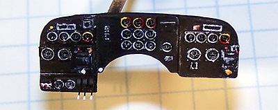
I like instrument panels so choose that as my place to start. The basics of the panel are fairly nice with good raised bezel detail but no interior instrument detail. I�m not even sure this will be visible when complete but I added some Mike Grant instrument decals in there just to make myself happy. I also added some PE throttle levels from the spares box. Drops of Future floor polish were placed over each instrument face to act as a glass lens. Note that the panel is attached to a toothpick to act as a work handle during the finishing process. Once completed the handle was stuck into a lump of clay and it sits in one corner of the modeling desk while work continues in other areas.
My next area to focus on is the wing. As I mentioned in the kit review we have to basic sub-assemblies here and I choose this one next. I mounted the resin engines on toothpicks then airbrushed them with some lacquer burnt iron. Each cylinder was dry brushed with silver and the backing plate was painted flat black. The gear reduction housing was painted a medium gray. I used short lengths of fine soldering wire to make each push rod. You do not see any ignition wires here as this engine type had all the wiring running behind the cylinders. Once I finished one engine face I wanted to see how it would look installed in a nacelle so quickly assembled one nacelle. Guess what, the resin piece does not fit into the nacelle. I had to grind a good amount of plastic out of the nacelle interior and out of the facing ring interior before the resin would fit. Fortunately the plastic piece is about two scale feet thick so the removal worked out all the way around.
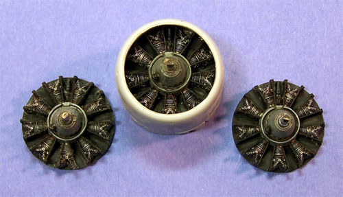 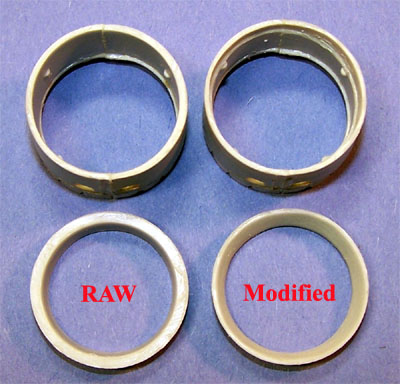
Tell you what, by time I got done cutting and gluing push rods into three radial engines I was getting pretty good at it. The first one took several hours but the next two went fairly quickly. Now that my engines are ready I can put the wing together.
Put the wing together, sure sounds easy doesn�t it? First problem I ran into was that the upper and lower outboard wing sections are not the same length, there is a serious step from the top to the bottom at the joining face and if you try to sand it smooth you will change the wing chord and really make things worse. When the outboard sections are mated to the central section a large gap forms on the top of one side and on the bottom of the other side. I used a large amount of superglue to tack the pieces in place then started filling the gap with strips of styrene.
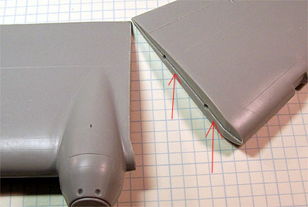 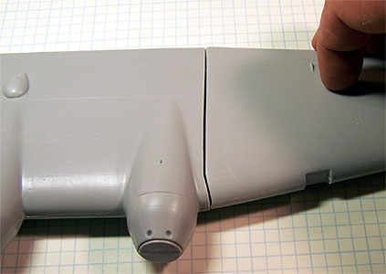
Next I started working with some extra fine Milliput to fill the gaps. Neat thing about Milliput is that you can mash it into the area needing filled then wet your fingers and really smooth out the surface. I worked the filler for about half an hour then simply washed off the wing under running water and let is set up overnight.
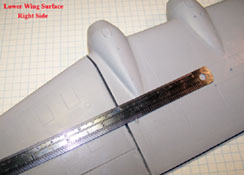
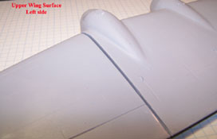
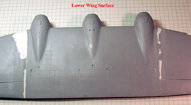
You can click on these small images to view larger pictures.
While making this repair I found that the plastic used by FM was not only very soft but prone to tearing, pealing and even crumbling. After several sanding sessions I brushed a heavy coating of Mr. Surfacer 500 over the filled areas and sanded that smooth. It took nearly a week of evenings but the wing was leveled out.
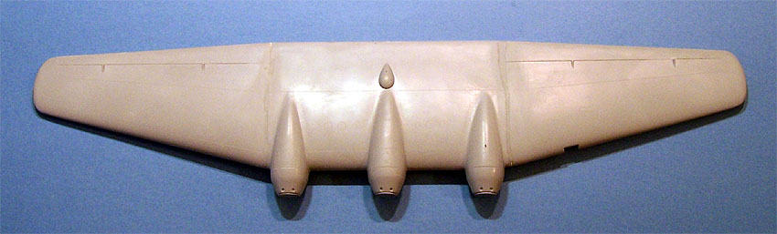
Now I can start adding some details to the wing. All the lower aileron hinges and flap vanes are molded in plastic with heavy flash. During the clean-up process several parts came apart on me and had to be repaired. The quality of the plastic in these smaller pieces was so bad that I decided to replace some of the kit parts with scratch built metal and plastic pieces. The original kit wing sections had a reinforcing band where the outboard sections mated to the central section that was destroyed by sanding � this was replaced with some .020 X .030 strip styrene. The upper engine cover grab handles were replaced with medium magnet wire, there were no aileron actuators provided in the kit and these were fashioned from heavy magnet wire. One resin antenna on the lower surface was not of the correct size so I built a new one from plastic strip and invisible thread. Several of the larger antenna are not placed but will wait until after the wing is attached to the fuselage.
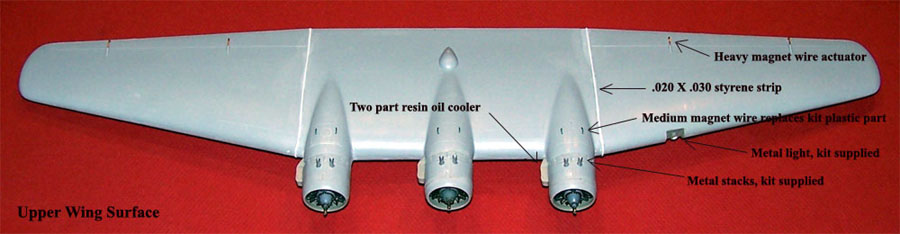 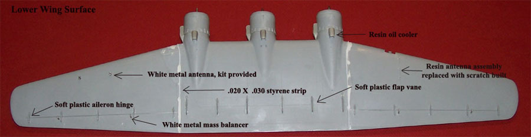
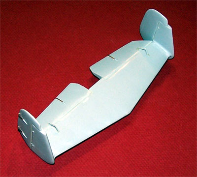
10/7/06
Once the wing was completed work on this project got seriously bogged down. Since I already had some experience now making control actuators on the wing I moved to the tail assembly and put it together. I sure make that sound easy, eh? Well, it was not. I had to sand the inside of each tail surface where the elevator would mate to close some nasty gaps there as well as work over each piece to remove flash and mold separation seams. The fit of the rudders to the tail plane was not very good either. I had to reduce the size of the fat little alignment studs on the tail plane and open the corresponding holes on the rudders. The little hinge actuators on the elevators were a nightmare. The plastic these were cast from had absolutely no internal adhesion and the pieces simply kept falling apart. I had to treat each piece with some Tenax 7R to get the plastic to hold together and even with that two had to be rebuilt from pieces. Then they had to be cleaned up!!!! Holy crap, by time I was done with the tail assembly I was ready to build anything by Tamiya just to take a break from this abuse.
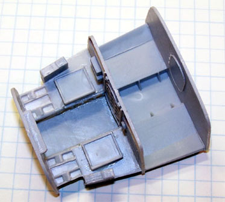
I like doing cockpit interiors so for some relief I start work on this front office. Clean-up is a lot of work simply due to the short run nature of the parts and general fit seems good. I put the basic interior pieces together first the head for paint. I�m using RLM-66 as my base interior color here. While the interior in drying the seats are mounted on toothpicks for painting, cushions are done in leather and some leftover Eduard Luftwaffe bomber seatbelts are used to dress things up a bit. I keep all leftover pieces from all model kits which is a good thing. Digging through my leftovers I found a fret of photo etched that had several control levers on it � these were used on the side consoles. Mike Grant instrument decals were also applied to areas on the side consoles and on the sidewall detail area for the pilot and copilot. Moving to the aft area of the flight deck the radio equipment was painted black then dry brushed white. Details were picked out with red and yellow enamels. I found a spare headphone set from a Tamiya armor figure set and added a fine wire to it for the radio operator�s station. I scanned a map of Europe and reduced it in size to about 1/48 scale then printed it to clear decal paper. I simply cut the map out and left it on the paper then applied this with some white glue to the radio operator�s table. There is enough greenhouse on this thing that some of this should be visible when completed � I hope. Remaining kit details were painted and placed then I built an additional electrical panel for opposite the radio equipment just to dress up that wall a bit. I added some wire umbilicls to the walls; front and back, painted yellow to help busy things up a little more then the entire assembly got a sludge wash.
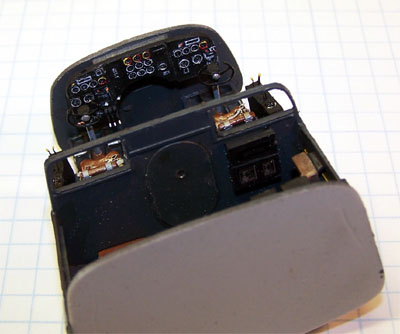 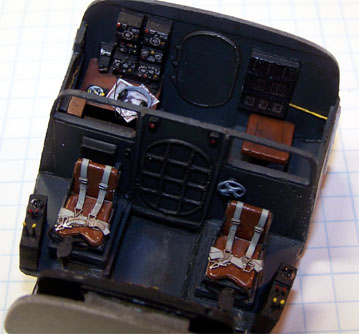
I had hoped the worse was over with the wing and tail assembly but sadly this was just the beginning of the torture. Next I went to assemble the fuselage and install the cockpit. The cockpit does not fit � it�s too fat! I can�t sand the insides of the fuselage or I will destroy the interior wall detail in the front section and there is very little I can remove from the cockpit sidewalls without doing damage there. I sanded what little I could then glued the cockpit assembly to the right side fuselage. I closed the fuselage up using superglue and accelerator applying lots of pressure to different areas to get things aligned and straightened. Even so I ended up with a slight gap along the top of the fuselage just aft of the cockpit. I test fit one of the canopies to see if I would be able to get enough flex out of it to compensate � yes, that part was dealable but I found the clear canopy was not deep enough to mate to the upper cockpit edges and get anywhere near the correct level of the fuselage. I think I�m going to have to build up some shims along this area when the time comes to install the clear canopy. The fun does not stop yet, the exterior surface of the fuselage has several rough areas that need sanding and the seam needed about five layers of Mr. Surfacer interspersed with sanding sessions to clean up. When not sanding a seam I was sanding the rough spots. So far I have been working on the seams and rough spots off and on for about a month now and still have a little further to go before I can start to replace the panel lines and surface details that have been lost. This thing is a real bugger.
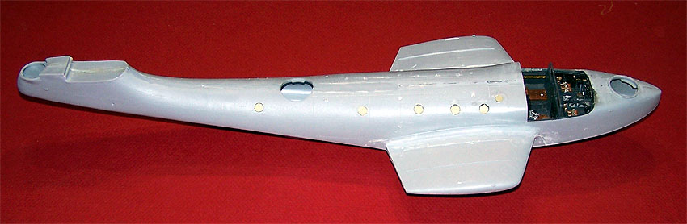
11/19/06
At last the rough spots have all been dealt with and I can move on. I replaced the fuselage stiffeners with thin pieces of sheet styrene along the upper length of the fuselage then attached the main wing pylons with medium superglue. I had to grind out some material inside the top mounting face of both pylons with my Dremel before a I had a good test fit of the wing to these pieces. Next I started working towards installing the canopy. More trouble here as the piece basically just does not fit. It�s too short and needed shims installed along the bottom sides to raise it up the fuselage. 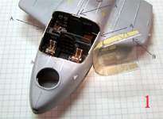 as you can see in image number 1 (you can click on that) there are shims superglued to the clear canopy and to the top wall of the fuselage. These were designed to overlap to help hold the piece in place because I was going to stress it just a little on the top and only have two hands. I tacked the canopy in place with spots of superglue and accelerator then filled the seam with clear parts cement. Once that had set up I painted the canopy with RLM-66 for interior color than came back and treated the seam again with Mr. Surfacer 500.
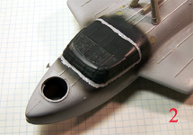
After much sanding, painting, filling and sanding again (oh my bloody fingertips) I finally had a good seam around the canopy. During the installation process I had cut back the fuselage stiffeners and now replaced them as they were supposed to extend over the aft canopy section anyway and this helped blend the part into the fuselage. I stuffed some tissue paper into the center dorsal gun position to protect the side ports from interior overspray. At long last I was ready to do some serious painting. I started with Mr. Surfacer 1000 cut 50% with lacquer thinner and coated the entire fuselage section. A few more defects became apparent at this point and I had to sand a little more. The lower surface was done with RLM-65 and post shaded with the same paint and a small addition of RML-66. The lower section was masked off with standard masking tape and the upper hull was done with RLM-73.
Once the RLM-73 had set up I mixed a lightened batch of it and post shaded all the panels. This was allowed to cure overnight then the upper hull was masked off for the camouflage pattern. Again this was done with standard masking tape. Next RLM-72 was applied and just like with the last color a lightened mix was used to post shade the panels and then the masks were removed.
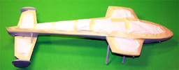
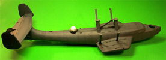
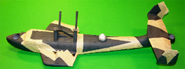
You may click on the small images above to view larger pictures
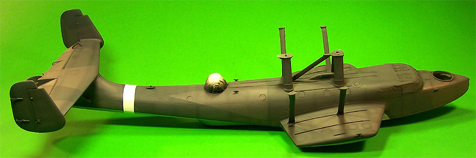
Starting to look pretty cool, huh? Now I have some brush work to do, the pylons need to be done with RLM-65 as do the support struts for the parasol wing. The struts for the tail plane need to be 65 on the bottom and 73 on the top and this is all done with thinned paint and a brush. I have to apply three or four coats to get color density but doing it this way avoids any brush marks. Next the fuselage section gets a coat of Future and some decals can be applied. 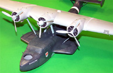 The kit provided decal sheet is fairly basic so I went to the spares box looking for service stencils and warning markings. Most of these will be applied on the flight control surfaces along with some fuel markings. Once I have located some that meet my needs I�ll scan them and reprint multiple copies on decal paper. For the moment we are dealing with the kit pieces. I had some real trouble with the German crosses and silvering even though I had given the model a good coat of Future. I had to shift from Micro-Sol to Mr. Marker Soft (a stronger version) and still had some silvering. I sealed the decals with another coat of Future then applied a sludge wash to the panel lines and gave it a final seal of Polly Scale Clear Flat.
The fuselage is basically done at this point. I still have to work on all the gun stations and have lots to do on the wing yet but I think I can remove the canopy masks and see how things look. In the picture above the wing is only sitting on the supports. One thing I forgot to mention about those wing supports, the long side support struts were all too short to find the wing and I had to fashion 3/8 inch inserts into each strut with styrene stock sanded to shape.
12/24/06
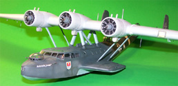
Moving on to the wing all the little antenna are mounted which means no matter which side is up I have to have it setting on bottles of paint to prevent breaking stuff off. The two pitot tubes are provided as straight masts only so I made small L shaped additions from fine magnet wire and attached these to the lower ends of the masts. The landing light is installed and masked off and engine faces are packed with damp tissue paper. The entire wing is primed with Mr. Surfacer 1200 cut 50% with lacquer thinner then all the panel lines are preshaded. The lower surface is painted with RLM-65 and allowed to dry. The leading edge of the wing of the wing is masked and the first layer of upper color is applied. This dries down then is masked for the final layer of color. The oil cooler radiators were brush painted with Gunze Burnt Iron. The wing is now coated with Future and allowed to cure overnight. While all this good stuff is going on I masked and painted the gun glazings. Machine guns were done with Burnt Iron, dry brushed with silver and attached to the metal mounting rings. I had to open up the forward and middle openings in the fuselage a little before the glazings would slip into place then secured then with clear parts cement.
With the dawn of a new day of modeling the decals are applied to the wing with some Micro-Sol, allowed to dry then sealed with more Future. Now the sludge wash goes on followed by a final coat of Polly Scale Clear flat and the masks can come off. Now I have to mount the wing to the fuselage. Using medium superglue I placed a large glob onto each of the central mounting posts and a little more on each of the outside support struts. I had to be careful about placing the wing to get it right the first time because I did not want to smear superglue all over the place. Medium glue does give you a little bit of time to make minor adjustments then I hit each contact point with some accelerator. The tensioning wires running between the support struts are made from invisible thread drawn across a black magic marker and attached with fine spots of superglue. The antenna running from the Port mast to the Port rudder is made the same way with the various insulators painted flat white. The propellers are drilled out to accept the metal engine shafts and simply slid in place with no glue.
Well, I think this beast is done and I could not be happier to get it off the work table. I think I found this the most distasteful build I have ever done and had not the subject been so special to me may have never finished it. When I started I had considered purchasing a second kit to convert to the modern turbo-prop version but not now, no way will I tackle this kit again. As a final point of interest, for taking pictures of the model I built a small V stand for the tail to make it sit straight then when all was said and done I went to hang this from the ceiling. This is when I discovered that the model is so heavy that standard invisible thread would not support it and had to shift to ten pound test fishing line. Next thing I discovered is that with that huge parasol wing she wanted to roll over inside the fishing line loops so I had to fashion a second support line (this one from invisible thread) running from the outboard engines to the ceiling hook to keep the beast upright. I also busted off the antenna twice getting the fishing line hooked up � this thing fought me to the bitter end.
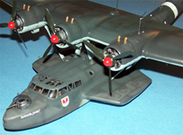
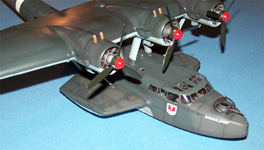
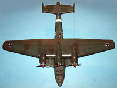
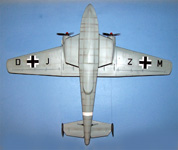
You may click on these small images to view larger pictures
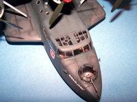
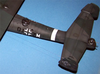
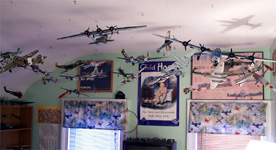


{kind=link}
{kind=link}
{kind=link}
{kind=link}
{kind=link}
{kind=link}
{kind=link}
{kind=link}
{kind=link}
{kind=link}
{kind=link}
{kind=link}
{kind=link}
{kind=link}
{kind=link}
{kind=link}
{kind=link}
{kind=link}
{kind=link}
{kind=link}
{kind=link}
{kind=link}